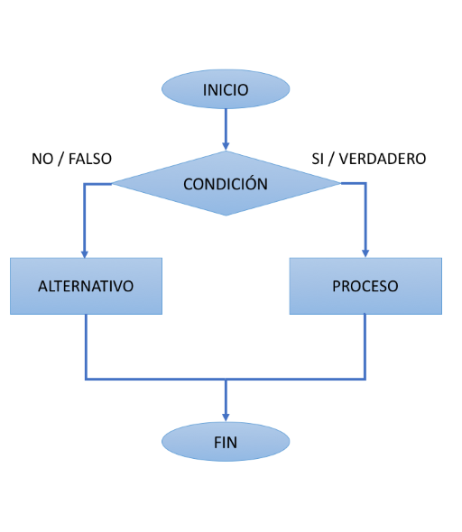

Bienvenido a nuestro portal web dedicado al estudio, análisis y aplicación de algoritmos de manejo de cadenas de caracteres. Aquí encontrarás una amplia recopilación de información sobre estructuras, operaciones y algoritmos fundamentales que permiten manipular, procesar y analizar cadenas de texto en diversos lenguajes de programación.
¿Por qué son importantes los algoritmos de cadenas?
Los algoritmos de manejo de cadenas son esenciales en múltiples áreas de la informática, incluyendo:
- Procesamiento de texto (búsqueda de palabras clave, detección de patrones, generación de texto automático).
- Compiladores e intérpretes (análisis léxico y sintáctico).
- Ciberseguridad (detección de firmas de malware, encriptación).
- Bioinformática (comparación de secuencias de ADN y proteínas).
- Sistemas de bases de datos (consultas eficientes de información textual).
¿Qué encontrarás en este portal?
- Definiciones y conceptos clave sobre el manejo de cadenas.
- Ejemplos prácticos en distintos lenguajes de programación.
- Código fuente optimizado listo para usar.
- Referencias y recursos para profundizar en el tema.
Este proyecto fue desarrollado por:
- Emelyn Fabian Reyes
- Oscar Osnarci Jimenez Peguero
- Pedribel Pion Rijo
- Samuel Leonardo Piña Polanco
📖 Para saber más sobre nosotros, visita el apartado de Presentación.
¡Explora y mejora tus conocimientos sobre los algoritmos de manejo de cadenas!

📖 Para más información, visita nuestra sección de Referencias.